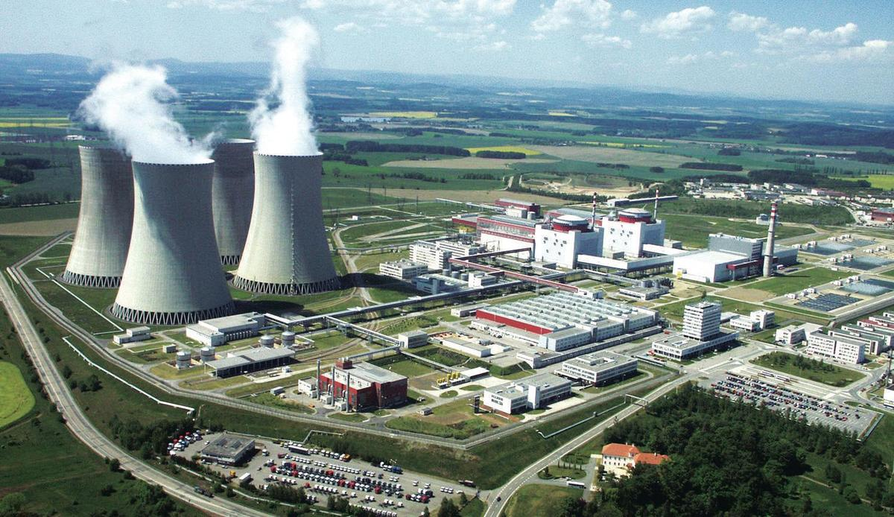
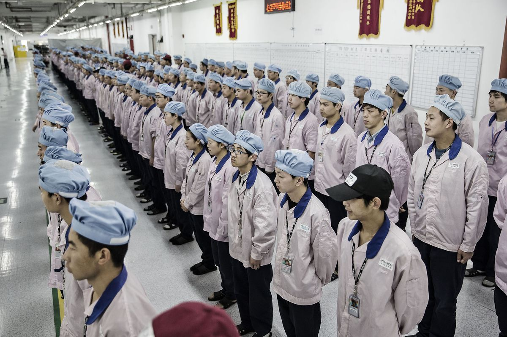

Et av verdens største problemer er klimautfordringene.
Kloden varmes opp, og klimaet endrer seg.
En av hovedgrunnene til dette er høye utslipp av klimagasser.
Men hva kan vi i Apple gjøre for å minske utslipp,
og hvordan kan dere forbrukere hjelpe?
Hvorfor er det viktig å resirkulere?
Mobiler er populære produkter, og det selges rundt 2,5 millioner årlig bare i Norge. Stadig ny teknologi gjør at modeller fort blir utdatert, og blir
erstattet av nyere modeller. Dette gjør at mange velger å bytte ut en fungerende telefon, for å kjøpe en nyere modell. Dette gjør at mange mobiler
blir tatt ut av bruk hvert år. Mobiler inneholder mange stoffer; rundt 40% metall, 40% plast, og 20% keramikk.Ca. 95% av dette kan resirkuleres.
Likevel er det ikke engang 1% av telefoner i Norge som blir levert tilbake. Dette er et stort miljøproblem, fordi enorme mengder med nyttige
ressurser ligger gjemt vekk i skuffer, uten å bli brukt.

4 av 5 nordmenn har en eller flere gamle mobiler liggende hjemme. Hvis disse hadde
blitt levert inn til resirkulasjon, så hadde det spart miljøet for mye utslipp. I stedet for å levere inn mobiler er det også mange som kaster
de i vanlig avfall. Dette er et stort miljøproblem, siden de inneholder flere stoffer som er skadelig for naturen. Når ressursene i gamle telefoner
ikke blir gitt tilbake, så gjør det at nye må utvinnes. Gruvedrift er en industri som slipper ut mye klimagass, og en reduksjon av behov for nye
materialer ville ha bidrat til å minske utslippene.Derfor er det viktig å levere dem inn til resirkulering.
Kina
Rundt 80% av mobiler blir produsert i Kina. Det er for det meste noen få produsenter som står for dette. De blir produsert i store
fabrikker, som er kjent for å ha dårlige forhold. Arbeiderne har lange og slitsomme dager, uten å få en god lønn. Noen steder skal
lønnen være så dårlig at arbeidere er avhengig av overtid. I noen av de verste sakene har det til og med blir rapportert om selvmord
grunnet de elendige forholdene.

Dette er riktignok ikke sånn det er på alle fabrikker i Kina. Det finnes mange fabrikker der de ansatte
får en akseptabel lønn og har dager som ikke sliter dem ut, men det er generelt dårligere forhold sammenliknet med vesten. Det er fordi det er
lavere standard for hva som er akseptabelt, og landet har en dårligere økonomi. Dette gjør at arbeidere aksepterer dårligere forhold, og det blir
billigere å produsere mobiltelefonene der. Hvis de hadde vært produsert i USA, der Apple holder til, ville trolig prisene vært 2-3 ganger så høye,
noe markedet ikke hadde akseptert. Derfor er det nødvendig,ikke bare for Apple, men også for alle andre produsenter som ønsker å konkurrere om de beste
prisene, å godta dårligere forhold på fabrikkene for å presse kostnadene ned.
Resirkulering i Norge
Nordmenn er i verdenstoppen på innlevering av større elektronikk,
men dessverre ikke så flinke til å gjenvinne mobiltelefoner.
Her i landet selges det årlig nesten 2,5 millioner mobiler, men gjenvinningen er ikke en gang på
1 prosent av dette. Elretur, Norges største returselskap for elektrisk og elektronisk avfall, forteller at de fleste har en
skuff med gamle mobiler hjemme i stedet. Bare hver femte nordmann er uten en gammel mobil i skuffen,
hver andre nordmann har 1-2 mobiler hjemme, mens hver fjerde nordmann har mer enn tre mobiler liggende (Kilde: Elretur/Norstat 2010).
Råvarer
Mobiltelefonene vi bruker inneholder mange ulike råvarer. I snitt inneholder en trådløs mobil
om lag 40 prosent metall, 40 prosent plast og 20 prosent keramikk. I tillegg benyttes kjemikalier.
Kina står alt for produksjonen av opp mot 80 prosent av verdens elektronikk, og andelen for
mobiltelefoner er trolig tilsvarende. Det er rapportert om ulovlige arbeidsvilkår for unge arbeidere i fabrikker med opp mot 400.000
ansatte, noe som skaper etiske utfordringer for mobilprodusentene.